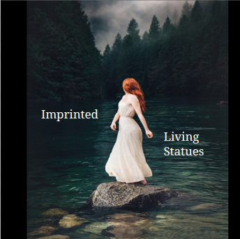

Design a Band Challenge
Challenge Information
Design thinking, what is and why is important? Design thinking is great use of skill because of the way it streches our creativity. We are studying to further expand the minds. The steps of deep design thinking includes using creativity to out stretch and further our potential. What we did included taking the randomness presented to us and make somethinhg of it. Which what ended up being is a finished result of how we connected it all.
Album Cover
Imprinted
Imprinted the band: starring members Jaxon Gonzalez(lead singer and piano player) Remi Marquez (drummer) Hunter Zepeda (bass player) Jaxon Remi and Hunter are best friends since childhood. Jaxon and Hunter knew each other because they were born and raised in Sacramento, California. Bestfriends since the beginning of time. Not completely true but they make it seem like that. They’re practically brothers. It wasn’t until Remi came in 6th grade with her green hair and straight white teeth , ripped jeans and huge green glasses did their world turn completely. While Remi had came into their lives in 6th grade she had barely arrived from her life in Vegas born and raised in Nevada. She had recently had suffered a really bad month in which her parents had brutally divorced. Once the divorce was over and she came to Sacramento to live with her relatives, taking nothing but her axe guitar and a suitcase. Long story short Remi knew trouble and didn’t care much. And when she met Jaxon and Hunter she decided to pull both guys out of their comfort zones. By the time it was 10th grade each one of them had taken up an instrument and had kick started writing songs. It wasn’t until the last year of highschool did that they perform in a coffee shop and luckily for them one of the producers from LA had been there that day and heard them. After their performance producer Monica Lisa Lee, a small minature woman in a pantsuit went up to them and signed them a contract then and there. To say anything else from there , their band Imprinted became a very popular R&B and lead onto to do so many albums world wide.